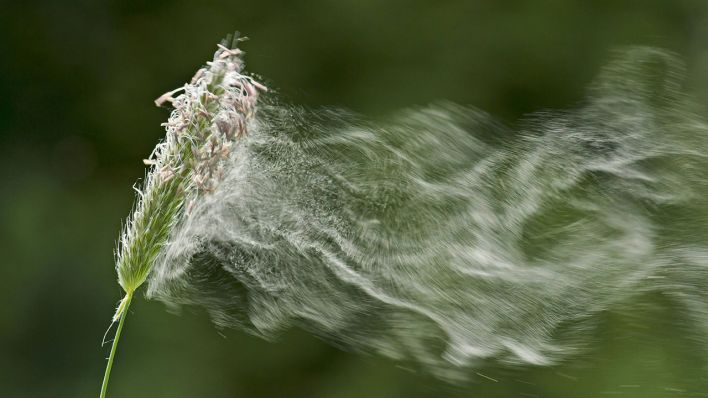

autres protagonistes
& processus associés

Les abeilles partagent le travail de la pollinisation.
Certaines plantes sont pollinisées par d'autres animaux, par le vent ou par l'eau.
Certains oiseaux, en particulier les colibris (oiseaux-mouches), pollinisent les plantes. Les fleurs qui attirent les oiseaux sont généralement de couleur vive (rouge, orange ou jaune), mais elles sont souvent inodores, puisque l'odorat des oiseaux est peu développé. Ces fleurs sont souvent longues et tubulaires. Elles produisent beaucoup de nectar et sont suffisamment robustes pour que les oiseaux puissent s'y percher.
Les chauves-souris sont des animaux nocturnes, ce qui signifie qu'elles sont actifs la nuit, et sont pollinisatrices de fleurs particulières. Des fleurs qui les attire non pas par leur couleur mais par leur parfum prononcé.
Deux éléments naturels sont aussi des pollinisateurs: le vent et l'eau. Le vent pollinise de nombreuses plantes. En général, il pollinise les fleurs peu colorées, inodores et qui ne produisent pas de nectar, c'est pour cela que ces fleurs ne sont pas pollinisées par des insectes puisqu'elles ne les attire pas. Les étamines et les pistils de ces plantes sont souvent longs, et leur pollen est généralement plus léger que celui des autres plantes puisque le vent porte le pollen d'une plante à l'autre. Le vent joue un rôle important dans la pollinisation de certaines cultures, comme celle du maïs et celle du blé puisqu'il n'a ni fleurs aux couleurs vives ni nectar sucré pour attirer les abeilles. Il doivent donc compter sur le vent pour être pollinisés. L'eau, tant qu'à lui, pollinise un petit nombre de plantes, particulièrement celles qui poussent dans les rivières et les ruisseaux.